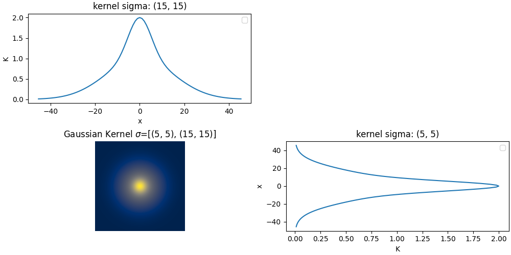
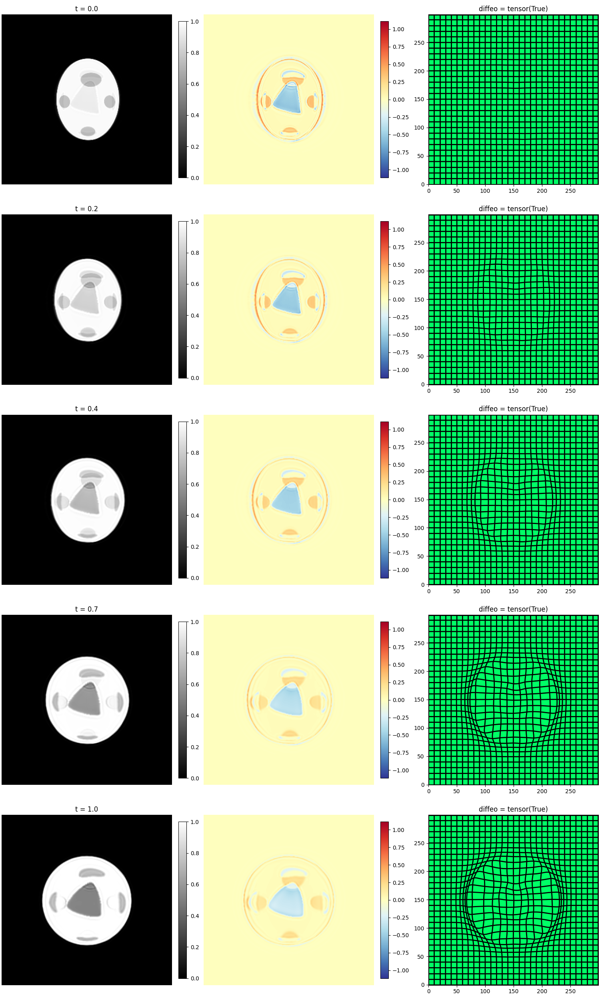
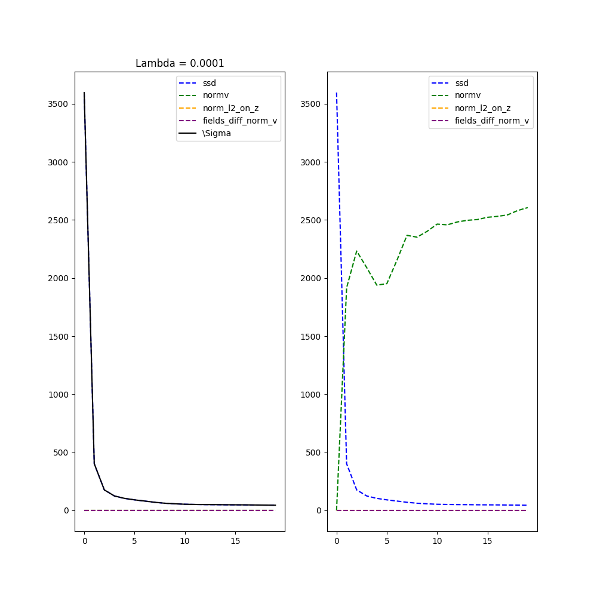
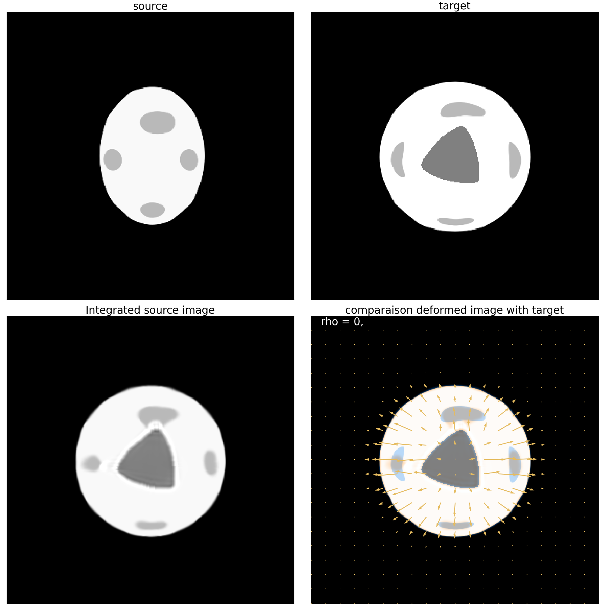
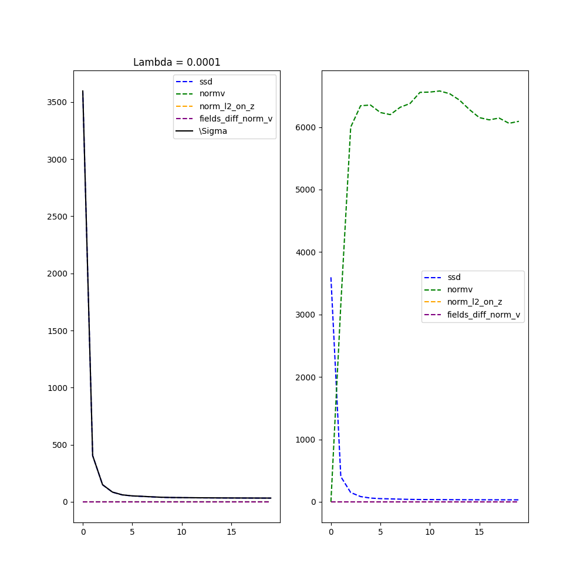

Note
Go to the end to download the full example code.
Weighted metamorphosis - simulated cancer growth
This toy example was build to simulate a cancer growth in a brain. This is a simple example of how to use the weighted metamorphosis to register two images.. This example is part of an exercise, it has been truncated to make you complete it.
Import the necessary packages
import matplotlib.pyplot as plt
try:
import sys, os
# add the parent directory to the path
base_path = os.path.join(os.path.dirname(os.path.abspath(__file__)), '..')
sys.path.insert(0, base_path)
import __init__
except NameError:
pass
from demeter.constants import *
import torch
import kornia.filters as flt
# %reload_ext autoreload
# %autoreload 2
import demeter.utils.reproducing_kernels as rk
import demeter.metamorphosis as mt
import demeter.utils.torchbox as tb
device = 'cpu'
if torch.cuda.is_available():
device = 'cuda:0'
print(f"Used device: {device}")
Used device: cpu
Load the images
size = (300, 300)
source_name, target_name = '23', '24'
S = tb.reg_open(source_name, size=size).to(device) # Small oval with gray dots
T = tb.reg_open(target_name, size=size).to(device) # Big circle with deformed gray dots
seg = tb.reg_open('21_seg', size=size).to(device) # rounded triangle
## Construct the target image
ini_ball, _ = tb.make_ball_at_shape_center(seg, overlap_threshold=.1, verbose=True)
ini_ball = ini_ball.to(device)
T[seg > 0] = 0.5 # Add the rounded triangle to the target
source = S
target = T
# mask = mr.mp.image_stock
source_name = 'oval_w_round'
target_name = 'round_w_triangle_p_rd'
kw_img = dict(cmap='gray', vmin=0, vmax=1)
plt.rcParams["figure.figsize"] = (20, 20)
fig, ax = plt.subplots(2, 2)
ax[0, 0].imshow(source[0, 0, :, :].cpu().numpy(), **kw_img)
ax[0, 0].set_title('source')
ax[0, 1].imshow(target[0, 0, :, :].cpu().numpy(), **kw_img)
ax[0, 1].set_title('target')
ax[1, 0].imshow(tb.imCmp(source, target), vmin=0, vmax=1)
ax[1, 1].imshow(seg[0, 0].cpu().numpy(), **kw_img)
ax[1, 1].set_title('segmentation')
# plt.show()
centre = (tensor(145), tensor(150)), r = 9 and the seg and ball have 249 pixels overlapping
Text(0.5, 1.0, 'segmentation')
Define the kernel operator
sigma = [(5, 5), (15, 15)]
kernelOp = rk.Multi_scale_GaussianRKHS(sigma, normalized=False)
kernelOp.plot()
rk.plot_kernel_on_image(kernelOp, image=target.cpu())
print("sigma", sigma)
- 
sigma is not a float, I suspect that the kernel is not purly gaussian.
/home/runner/work/Demeter_metamorphosis/Demeter_metamorphosis/src/demeter/utils/reproducing_kernels.py:307: UserWarning: No artists with labels found to put in legend. Note that artists whose label start with an underscore are ignored when legend() is called with no argument.
ax.legend()
sigma is not a float, I suspect that the kernel is not purly gaussian.
kernel shape: torch.Size([1, 91, 91])
kernel shape: 91 91
x, y torch.Size([91, 91]) torch.Size([91, 91])
sigma [(5, 5), (15, 15)]
We first compute the classic metamorphosis without any mask to compare results.
rho = 0.7
momentum_ini = 0
mr = mt.metamorphosis(source, target, momentum_ini,
kernelOperator=kernelOp,
rho=rho,
integration_steps=10,
cost_cst=1e-2,
n_iter=20,
grad_coef=1,
dx_convention='pixel',
)
mr.plot()
mr.plot_deform()
mr.mp.plot()
plt.show()
mr.save_to_gif("image deformation", f"simpleCancer_Meta_rho{rho}_image",
folder="simpleCancer_Meta")
# plt.show()
- 


Progress: [#---------] 10.00% (Ssd : ,350.1366).
Progress: [##--------] 15.00% (Ssd : , 91.3460).
Progress: [##--------] 20.00% (Ssd : , 72.6602).
Progress: [##--------] 25.00% (Ssd : , 63.5695).
Progress: [###-------] 30.00% (Ssd : , 58.9446).
Progress: [####------] 35.00% (Ssd : , 53.5088).
Progress: [####------] 40.00% (Ssd : , 49.1567).
Progress: [####------] 45.00% (Ssd : , 46.0708).
Progress: [#####-----] 50.00% (Ssd : , 43.7511).
Progress: [######----] 55.00% (Ssd : , 40.8513).
Progress: [######----] 60.00% (Ssd : , 38.6410).
Progress: [######----] 65.00% (Ssd : , 37.4236).
Progress: [#######---] 70.00% (Ssd : , 36.5052).
Progress: [########--] 75.00% (Ssd : , 35.0647).
Progress: [########--] 80.00% (Ssd : , 33.3091).
Progress: [########--] 85.00% (Ssd : , 32.4722).
Progress: [#########-] 90.00% (Ssd : , 31.8397).
Progress: [##########] 95.00% (Ssd : , 30.9987).
Progress: [##########] 100.00% Done...
(Ssd : , 30.7090).
Computation of forward done in 0:01:16s and 0.861cents s
Computation of metamorphosis done in 0:01:16s and 0.861cents s
Clipping input data to the valid range for imshow with RGB data ([0..1] for floats or [0..255] for integers). Got range [-0.1042790487408638..1.2210246324539185].
convert -delay 40 -loop 0 /home/runner/work/Demeter_metamorphosis/Demeter_metamorphosis/examples/gifs/simpleCancer_Meta/simpleCancer_Meta_rho0.7_image_\d3.png /home/runner/work/Demeter_metamorphosis/Demeter_metamorphosis/examples/gifs/simpleCancer_Meta/simpleCancer_Meta_rho0.7_image.gif
Cleaning saved files.
Your gif was successfully saved at : /home/runner/work/Demeter_metamorphosis/Demeter_metamorphosis/examples/gifs/simpleCancer_Meta/simpleCancer_Meta_rho0.7_image.gif
('/home/runner/work/Demeter_metamorphosis/Demeter_metamorphosis/examples/gifs/simpleCancer_Meta/', 'simpleCancer_Meta_rho0.7_image.gif')
inverse the mask to have M(x) = 0 where we want to add intensity.
print("\n\nComputing weighted metamorphosis - time constant mask")
print("=" * 20)
cst_mask = 1 - seg.repeat(10, 1, 1, 1) * .5
lamb = .0001
n_iter, grad_coef = (20, .1)
momentum_ini = 0
mr_wm = mt.weighted_metamorphosis(source, target, momentum_ini, cst_mask,
kernelOperator=kernelOp,
cost_cst=lamb,
n_iter=n_iter,
grad_coef=grad_coef,
safe_mode=False,
dx_convention='pixel',
optimizer_method='LBFGS_torch'
)
mr_wm.plot()
mr_wm.plot_deform()
plt.show()
- 
- 
Computing weighted metamorphosis - time constant mask
====================
plop
not oriented
Weighted
Progress: [#---------] 10.00% (Ssd : ,401.9724).
Progress: [##--------] 15.00% (Ssd : ,176.6749).
Progress: [##--------] 20.00% (Ssd : ,124.5189).
Progress: [##--------] 25.00% (Ssd : ,103.7301).
Progress: [###-------] 30.00% (Ssd : , 90.9061).
Progress: [####------] 35.00% (Ssd : , 80.7103).
Progress: [####------] 40.00% (Ssd : , 70.0310).
Progress: [####------] 45.00% (Ssd : , 61.9525).
Progress: [#####-----] 50.00% (Ssd : , 56.9847).
Progress: [######----] 55.00% (Ssd : , 53.1277).
Progress: [######----] 60.00% (Ssd : , 51.4168).
Progress: [######----] 65.00% (Ssd : , 50.1670).
Progress: [#######---] 70.00% (Ssd : , 49.6573).
Progress: [########--] 75.00% (Ssd : , 48.5550).
Progress: [########--] 80.00% (Ssd : , 48.0538).
Progress: [########--] 85.00% (Ssd : , 47.5863).
Progress: [#########-] 90.00% (Ssd : , 46.6465).
Progress: [##########] 95.00% (Ssd : , 45.7702).
Progress: [##########] 100.00% Done...
(Ssd : , 44.6144).
Computation of forward done in 0:01:38s and 0.454cents s
Computation of weighted_metamorphosis done in 0:01:38s and 0.454cents s
Clipping input data to the valid range for imshow with RGB data ([0..1] for floats or [0..255] for integers). Got range [0.0..1.140936255455017].
Why the result is not as expected? What can you do to improve it?
Weighted metamorphosis with time evolving mask.
Your mission is to model a smart evolving mask that will guide the registration process.
print("\n\n Weighted metamorphosis - evolving mask")
print("=" * 20)
print("\tComputing evolving mask")
mask = torch.rand_like(mr.mp.image_stock)
# display the mask at different time
L = [0, 2, 8, -1]
fig, ax = plt.subplots(1, len(L), figsize=(len(L) * 5, 10), constrained_layout=True)
ax[0].set_title('orienting mask')
ax[0].set_title('residuals mask')
for i, ll in enumerate(L):
ax[i].imshow(mask[ll, 0].cpu(), cmap='gray', vmin=0, vmax=1, origin="lower")
plt.show()
Weighted metamorphosis - evolving mask
====================
Computing evolving mask
print("\n\tComputing weighted metamorphosis")
n_iter = 15
grad_coef = 1
cost_cst = .0001
residuals = 0
mask = mask.to(device)
# residuals = mr_wm.to_analyse[0].clone().to(device)
mr_wm = mt.weighted_metamorphosis(source, target, residuals,
mask,
kernelOp,
cost_cst,
n_iter,
grad_coef,
safe_mode=False,
dx_convention='pixel',
optimizer_method='LBFGS_torch'
# optimizer_method='adadelta'
)
mr_wm.plot()
plt.show()
- 

Computing weighted metamorphosis
plop
not oriented
Weighted
Progress: [#---------] 13.33% (Ssd : ,108.9679).
Progress: [##--------] 20.00% (Ssd : , 68.2025).
Progress: [###-------] 26.67% (Ssd : , 57.2934).
Progress: [###-------] 33.33% (Ssd : , 52.4012).
Progress: [####------] 40.00% (Ssd : , 48.5347).
Progress: [#####-----] 46.67% (Ssd : , 45.8516).
Progress: [#####-----] 53.33% (Ssd : , 43.5855).
Progress: [######----] 60.00% (Ssd : , 41.8203).
Progress: [#######---] 66.67% (Ssd : , 40.5551).
Progress: [#######---] 73.33% (Ssd : , 39.4523).
Progress: [########--] 80.00% (Ssd : , 38.4913).
Progress: [#########-] 86.67% (Ssd : , 37.7798).
Progress: [#########-] 93.33% (Ssd : , 37.1087).
Progress: [##########] 100.00% Done...
(Ssd : , 36.4462).
Computation of forward done in 0:00:40s and 0.559cents s
Computation of weighted_metamorphosis done in 0:00:40s and 0.560cents s
Clipping input data to the valid range for imshow with RGB data ([0..1] for floats or [0..255] for integers). Got range [-0.18509350717067719..1.202865481376648].
mr_wm.plot_deform()
plt.show()
mr_wm.mp.plot()
plt.show()
Total running time of the script: (3 minutes 54.146 seconds)